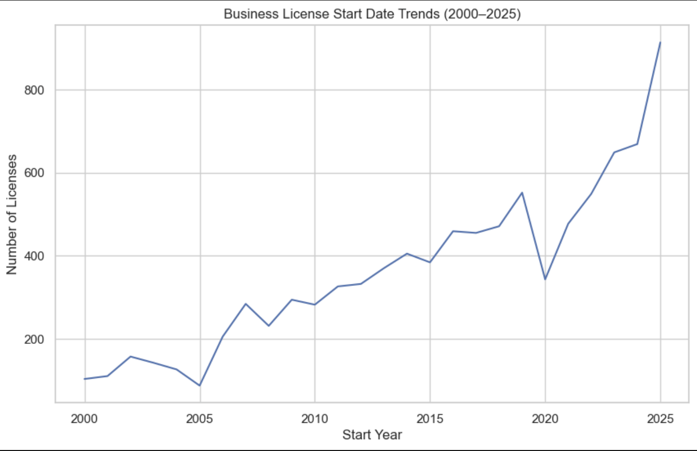

Interactive Map
Other Charts & Visuals
These charts highlight a few key trends from the New Orleans business license dataset.
Top 10 Business Types

Identifies the top 10 business categories by license count, revealing which industries are most active and driving business growth in New Orleans.
Business Density Map

Maps the concentration of licensed businesses across New Orleans, revealing clusters of commercial activity and areas with higher business density.
Business Trends Over Time

Tracks business license activity over time, highlighting long-term growth trends and fluctuations in economic activity across New Orleans.